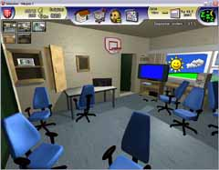
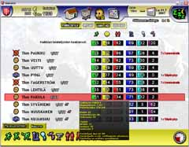
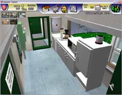
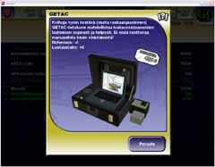
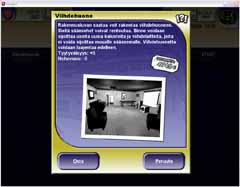

Sääasemamanageri on Niinisalon Tykistöprikaatin maasääaseman managerointipeli. Olet sääaseman hoitaja ja samalla säävarusmiesten johtaja. Järjestät alaisillesi koulutusta ja palvelusohjelmaa. Sääaseman tehtävä on tuottaa SYNOP-sääsanomia. Onnistuneet sääsanomat palkitaan viikottain rahalla ja kunniapisteillä. Sääasemalle voi ostaa tavaraa, jotka vaikuttavat tyytyväisyyteen. Lisäksi ajoittain tulee komennuksia, joihin sinun tulee lähettää taistelijoita tekemään sääpalvelua. Komennuksilta saa palkinnoksi rahaa ja kunniapisteitä. Kunniapisteiden noustessa oma sotilasarvosi kasvaa. Myös alaisesi voivat ylentyä.
Alaisiasi ovat:
- Säämiehistö (uusi ja wanha jaos): tykkimiehet ja korpraalit
- Aliupseerioppilaat, eli oppilaat joista tulee aikanaan ryhmänjohtajia.
- Ryhmänjohtajat: alikersantit ja kersantit
Alaisillasi on seuraavat ominaisuudet: tyytyväisyys, kunto, nohevuus (kertoo halukkuuden noudattaa sääntöjä ja käskyjä), ja taidot luokiteltuina SYNOP-, luotaus- ja lentosäätaitoihin. Jokaista taitoa tarvitaan eri komennuksilla ja säätehtävissä. Itselläsi on kunniapisteet, jotka kertovat maineestasi Puolustusvoimista, sekä tietenkin sotilasarvo. Aloitat alikersanttina ja ylenemismahdollisuuksia on paljon.

Pikkukuvia klikkaamalla saat täysikokoisen kuvan.






Peli on freewarea. Lataa Sääasemamanageri versio 1.01 klikkaamalla alla olevaa latauspainiketta.
(Tiedostokoko: 13.7 Mt, ZIP-pakattu)
Peli toimii Windows XP:ssä ja Windows Vistassa. Vaatii vähintään DirectX 8:n.
Suunnittelu, 3D-mallinnus ja henkinen tuki: Alikersantti Heikki Kesa
Erityiskiitokset Game Maker Suomi -foorumin jäsenille arvokkaasta beta-testauksesta!